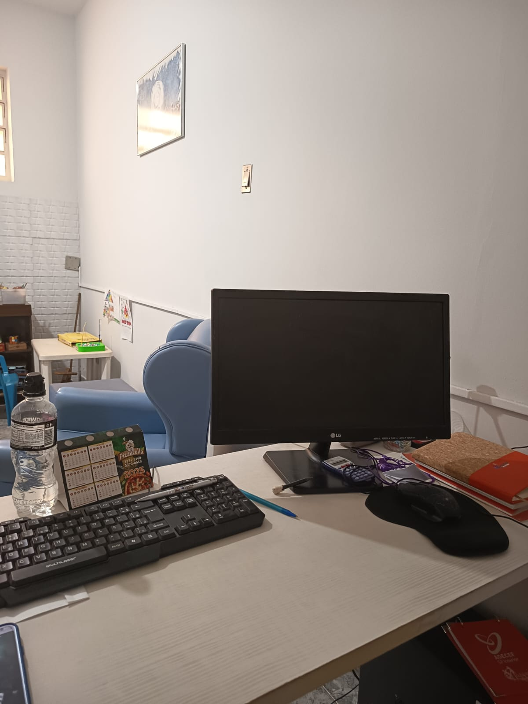

Psicoterapia é um processo terapêutico para autoconhecimento, desenvolvimento pessoal e superação de dificuldades emocionais e comportamentais, em um ambiente seguro e acolhedor.
Agendar AtendimentoSou Renata Queiroz, psicóloga formada na UTP (Universidade Tuiuti do Paraná, Curitiba-PR), especialista em Psicologia e Saúde, na UNESP – Araçatuba.
Minha atuação é baseada em ética, empatia e respeito à singularidade de cada pessoa, promovendo saúde mental, bem-estar e cuidado emocional.
Abordagem humanizada focada no seu bem-estar emocional
Atendo adolescentes e adultos, em meu consultório ou online.
Ansiedade, autoestima, autoconhecimento, dificuldades nos relacionamentos, fobias, timidez e burnout são acolhidos respeitando o tempo e a individualidade de cada pessoa.
O objetivo é desenvolver habilidades para lidar melhor com os desafios emocionais.
Estratégias para lidar com preocupações.
Fortalecimento emocional e autoconfiança.
Compreensão dos próprios processos internos.
Construção de vínculos mais saudáveis.
Me encontre pelos canais oficiais:
